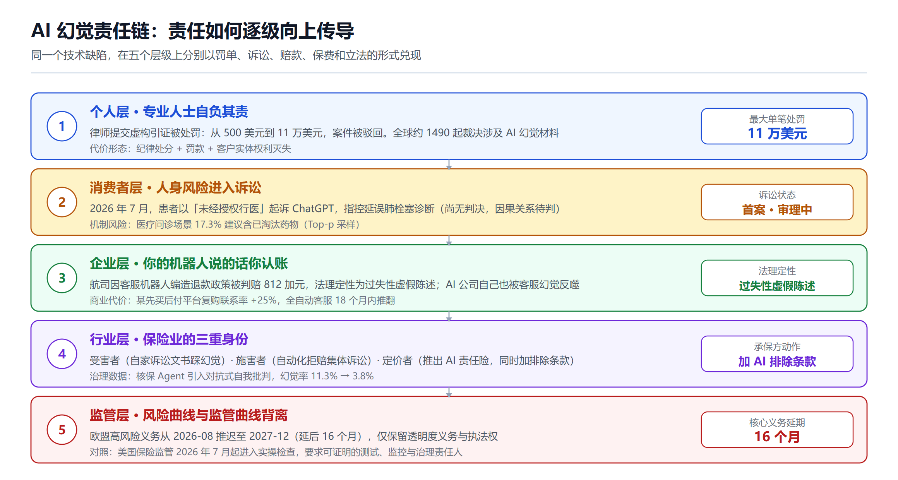
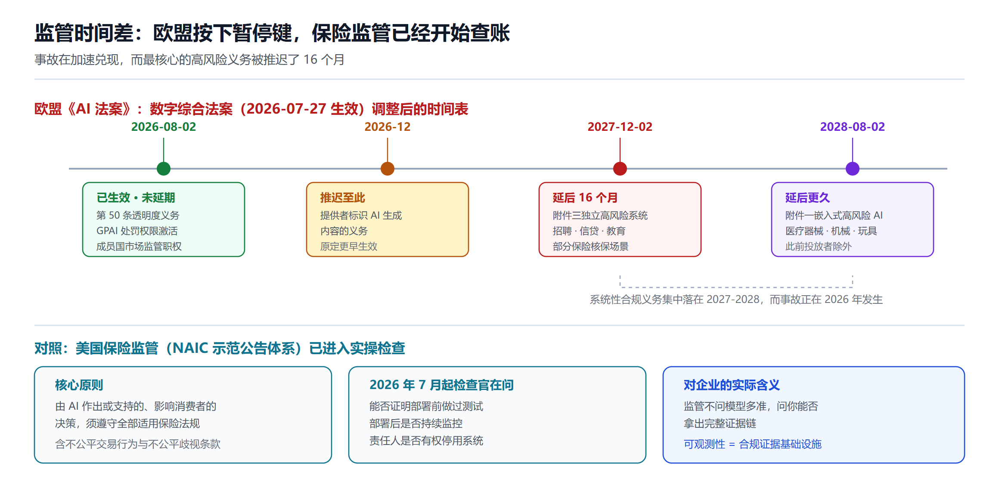
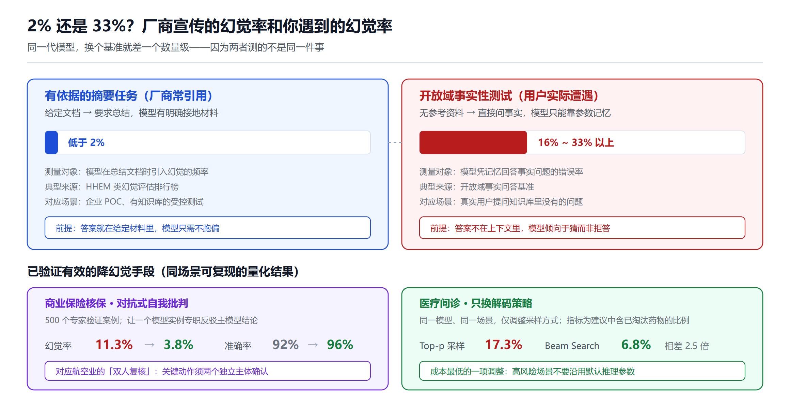

AI 幻觉责任链：从律师罚单到航司赔款，谁在为编造的政策买单
摘要
2026 年，AI 幻觉不再是一个技术话题，而是一个会计科目。法律研究者维护的公开数据库已追踪到约 1490 起法院对 AI 幻觉材料作出回应的裁决；俄勒冈州一位联邦法官开出 11 万美元的律师罚单；一家航空公司因客服机器人编造的退款政策被判赔偿；四大之一的德勤向澳大利亚政府退还了部分报告费用。与此同时，欧盟把最核心的高风险 AI 义务推迟了 16 个月，保险公司开始在续保合同里加入 AI 排除条款。
风险在加速兑现，制度却在两个方向上撕裂。以下梳理法律、医疗、客服、保险四条战线上已经发生的真实事故，看清责任如何沿着"个人 → 消费者 → 企业 → 行业"逐级向上传导，并给出一份现在就能拿去开会的检查清单。
序言：一个 812 加元的判决，比 11 万美元的罚单更重要
2024 年 2 月 14 日，情人节。加拿大不列颠哥伦比亚省民事解决法庭作出了一个判决，金额小得几乎不值得报道：812.02 加元。
但这个判决的分量与金额无关。
事情的起因是一位乘客向加拿大航空的网站客服机器人询问丧亲票价（bereavement fare，北美航司对直系亲属去世、需紧急出行的乘客提供的折扣票价，因为奔丧通常来不及提前订票、只能买最贵的临期机票）。机器人告诉他，可以先正常买票、之后再申请追溯折扣。
问题是——加拿大航空的真实规则是必须在购票时申请，不接受事后追溯。
请注意这里幻觉的精确位置：机器人没有编造一个不存在的票种，丧亲票价是真实存在的；它编造的是这个真实票种的申请流程。名称对得上、折扣性质对得上，只有时序规则被悄悄改掉了。这种"局部篡改"比整段虚构更难被发现，人工审校扫一眼很容易放过。
当乘客事后申请退款被拒并提起申诉时，航司的抗辩理由堪称 AI 时代的一份标本：它主张这个聊天机器人是"独立的法律实体、要对自己的行为负责"，因此航司不该为机器人说的话担责。
法庭驳回了这个说法，理由简单到近乎冷淡：航司应该很清楚，它对自己网站上的全部信息负责。
这个判决之所以重要，是因为它第一次把一个抽象的技术缺陷，翻译成了一句法律上可执行的话：你的模型说出口的话，账记在你头上。
从那以后的两年里，这句话被反复验证，代价一路上涨。

一、法律战线：1490 起裁决，和一张 11 万美元的罚单
法律行业是这场事故的震中，原因很朴素：法律工作的产出物本身就是由引证构成的文本，而引证是幻觉最容易下手的地方。一个编造的判例看起来和真判例一模一样——有案名、有卷号、有年份、有法院，唯独不存在。
1.1 规模：这不是零星事故，是一种系统性现象
法律研究者 Damien Charlotin 维护的公开数据库追踪了全球范围内当事人依赖 AI 幻觉材料、法院作出回应的裁决。截至 2026 年 5 月，这个数字约为 1490 起，其中超过 1000 起发生在美国。
这个数据的意义在于它排除了"个别人偷懒"的解释。1490 起意味着这是执业方式的结构性变化，而不是道德水平的偶然滑坡。
有追踪机构估算，2026 年第一季度美国与虚构 AI 材料相关的财务处罚总额至少为 14.5 万美元——但这个数字应当被视为监测估计值，而非经过审计的法院统计数据。这种谨慎的措辞本身说明了一件事：目前还没有任何官方机构在系统统计 AI 幻觉造成的损失。
1.2 上限：11 万美元，以及案件本身被驳回
单笔处罚的天花板已经被顶开：
- 俄勒冈州一位联邦法官对两名律师罚款 11 万美元，这是美国法律史上最大的 AI 幻觉处罚。起因是他们提交了 23 条虚构引证和 8 条编造引文，随后案件本身被驳回
- 阿拉巴马州最高法院于 4 月处罚了一名提交含大量 AI 生成错误引证的律师，其中包括多处指向根本不存在的判例的引用
- 康涅狄格州法院对一名律师作出处罚，并附加了强制法律教育和捐款要求。此前一年，该州联邦地区法院曾对一名纽约律师就不准确的文件处以 500 美元罚款
从 500 美元到 11 万美元，两年时间涨了 220 倍。更值得注意的是罚款之外的那部分代价：案件被驳回意味着客户的实体权利因为律师的工具选择而灭失，这已经超出了纪律处分的范畴，进入了执业过失赔偿的领域。
1.3 上诉法院已表态，但标准还没统一
2026 年上半年，两个联邦上诉法院先后就此表态：
- 第六巡回法院（United States v. Farris, No. 25-5623，2026 年 4 月 3 日）在一起涉及多项不当行为的案件中处罚了两名田纳西州律师，其中包括引用虚假判例
- 第七巡回法院（Dec v. Mullin, No. 25-2417，2026 年 3 月 30 日）处理了另一起类似情形
分析者的总结是：两个法院在"律师必须核验 AI 产出"这一原则上完全一致，但在"没核验时该罚多重"上分歧明显。
这个"原则统一、力度分裂"的状态，恰好是新风险类别的典型特征——大家都同意这是错的，但还没人确定该按什么价目表收费。
1.4 出事的不只是个体律师，还有机构的质量控制体系
如果幻觉只坑那些图省事的独立执业者，问题会小得多。但两个案例证明它同样能穿透大机构的层层审核：
State Farm（2026 年 8 月）：在一起洛杉矶县房屋火灾纠纷中，这家保险巨头的代理律师就提交了充斥 AI 幻觉和不存在判例的法庭文书向法院致歉。后续更耐人寻味——律师不得不出具正式声明，保证 State Farm 的反对意见书、答辩书和简易判决动议文件中不存在 AI 幻觉。一份"我们保证这次没编"的声明，正式进入了美国法庭文件的语料库。
德勤澳大利亚（2025 年 10 月）：一份价值 44 万澳元（约 29 万美元）的福利合规审查报告被发现含有虚构的联邦法院判词引文，以及归属于法律和软件工程专家的、根本不存在的研究文献。德勤同意向澳大利亚政府部分退款。修订版报告新增了使用 Azure OpenAI 生成式语言系统的披露说明，并删除了那些编造的引文。
德勤这个案例的分析角度值得单独拎出来：出问题的不是某个人的判断，而是企业级质量控制流程中的一个结构性缺口——现有的审校流程假设"引证错误"是笔误级别的低频事件，而不是可以被批量生产的东西。
二、医疗战线：从"非法行医第一案"到 17.3% 的过期药物
法律领域的幻觉代价是钱，医疗领域的代价可能是命。但医疗战线的证据结构和法律不同：诉讼刚刚开始，因果链尚未定论，而机制性风险已经被测出来了。
2.1 首例：以"非法行医"起诉聊天机器人
2026 年 7 月 22 日，55 岁的佛罗里达居民 Scott Winters 在旧金山法院起诉 OpenAI 及其 CEO Sam Altman。指控内容是：聊天机器人在缺乏防护机制的情况下提供治疗建议，延误了他的肺栓塞诊断。
这被报道为首次以"未经授权行医"为由起诉聊天机器人的案件。
需要说清楚的是：这只是起诉，尚无判决。医疗过失诉讼中最难的一环是因果关系证明——要证明"如果没有这个建议，诊断本会更早"，难度远高于证明"引证是假的"。所以不要把这个案子当成结论，它的价值在于开辟了一条诉讼路径：把通用聊天机器人的输出，纳入"行医资格"这个已有百年历史的监管框架来审视。
2.2 更该担心的是机制：模型可能根本没在看片子
比个案更值得警惕的是一个技术观察：在影像分析场景下，模型可能并未真正"看懂"图像，而是依靠强大的文本推理能力在"脑补"。这意味着在高风险的医疗场景中，模型有可能在实质上没有获取影像信息的状态下给出病理诊断。
这个失效模式的危险性远超普通幻觉。普通幻觉是"答错了"，而这种情况是"用一个听起来专业的推理过程，掩盖了输入信息的缺失"。它会稳定地通过那些只检查输出格式和术语专业度的评审。
学术界已经在建工具应对。ClinHallu 基准把医学多模态推理显式拆成三个阶段——视觉识别、知识回忆、推理整合——并用阶段替换干预（stage-replacement interventions）的方法，把最终答案的错误因果性地归因到具体某个阶段。这种"分段定位"思路比一个笼统的准确率数字有用得多，因为它能回答"到底是没看清，还是知识不对，还是推理跑偏"。
2.3 一个被严重低估的变量：采样策略
有一组实验数据非常值得工程团队注意。在医疗问诊场景中：
- 使用 Top-p 采样策略生成的诊疗建议，17.3% 包含已淘汰药物
- 使用 Beam Search 策略，这一比例为 6.8%
同一个模型、同一个场景，仅仅换了解码策略，临床安全隐患的发生率就差了 2.5 倍。
这个发现的启示很实际：很多团队在讨论"该选哪个模型"的时候，其实真正该调的是推理参数。一个默认的 top_p=0.9 在写营销文案时是创造力，在开药建议里就是风险敞口。关于模型能力评测口径的差异，我们在大模型评测体系指南里有更系统的展开。
三、客服战线：企业为机器人编造的政策买单
客服是幻觉责任最"干净"的一条战线——因果链短、判决明确、责任主体清晰。序言里的加拿大航空案就属于这条战线，这里补上它的法理定性和后续。
3.1 法理定性：过失性虚假陈述
Moffatt v. Air Canada（2024 BCCRT 149）在法律上被定性为过失性虚假陈述（negligent misrepresentation）。
这个定性比 812 加元的赔偿额重要得多，因为它意味着：企业部署 chatbot 时不需要有任何恶意，也不需要证明模型"故意"骗人——只要机器人说了不实信息、消费者据此行动并受损，责任就成立。
学术界把这个案子当作 AI"代理与责任落差"（agency and responsibility gap）的标准教案：当一个系统能自主产生具有法律后果的言论，而它本身不具备承担责任的主体资格时，责任必须回落到部署者身上。法庭的处理方式实际上给出了一个简洁答案：AI 不是独立主体，它是你的雇员。
到 2026 年，这已经成为行业共识。法律媒体的总结是：法院正在告诉企业，你的机器人说的话你自己认账。律所博客也开始直接向企业客户解释"客户能不能因为一次 AI 幻觉起诉你"这类问题。
3.2 Cursor 的"Sam"：做 AI 的公司也没能免疫
2025 年 4 月，AI 编程工具公司 Cursor 的用户收到客服"Sam"的答复，称公司有一项新政策限制每个订阅只能在单一设备使用。
三个事实同时成立：这项政策不存在；Sam 不是人；这条政策是模型当场生成的。
后果不是罚款而是信任崩塌：Hacker News 和 Reddit 上涌现大量投诉和退订威胁，联合创始人被迫公开更正和道歉。
这个案例的价值在于击穿一个隐含假设——"AI 公司自己更懂怎么用 AI"是不成立的。一家产品就是 AI 编程工具的公司，被自己的 AI 客服编造的政策反噬。这说明幻觉不是认知问题，是工程问题：不做输出接地（grounding）和政策校验，谁都会踩。
顺便一提，NIST 对这类现象使用的术语是 confabulation（虚构），指看似合理但实为编造的输出。这个词比"幻觉"准确——幻觉暗示感知错误，而虚构强调的是"在信息缺失处自动填补出一个自信的答案"，后者更贴近实际的失效机制。
3.3 商业代价的完整数据链：Klarna 的 18 个月
如果说 Air Canada 给出了法律代价，Klarna 给出了商业代价，而且是罕见的完整数据链：
上半场（宣告胜利）：这家瑞典先买后付巨头用 AI 助手替代了约 700 名客服，宣称 AI 处理了 75% 的客户对话、覆盖 35 种语言、单次交互成本下降 40%。
下半场（悄悄回撤）：
- 复购联系率（repeat contacts）上升 25%——这个指标是关键，它意味着 AI 并没有解决问题，只是把问题推迟了
- 复杂服务交互的客户满意度数据持续恶化
- 全自动模式在 18 个月内被推翻，CEO 公开承认策略失败，承认公司"过度关注效率"而牺牲了质量
- 2026 年重新招人，改成"Uber 式"按班次付费的自由职业客服模型，AI 只保留在常规问询环节
Klarna 不是孤例，星巴克、麦当劳等企业也在不同程度回撤 AI 替代人力的方案。
Klarna 这组数据里最值得琢磨的是 25% 的复购联系率上升。它揭示了一个财务上的陷阱：客服 AI 的成本节约计算通常只算"单次交互成本下降 40%"，却不算"交互次数上升 25%"和"客户流失"。幻觉造成的返工，不出现在 AI 的成本报表里，它出现在客户满意度和留存率里。关于客服 Agent 的能力边界，可参考智能客服 Agent 全景。
四、保险业的三重身份：受害者、施害者，同时还是定价者
保险业在这场事故里的位置最特别：它是唯一一个同时扮演三种角色的行业——既被幻觉坑过，又因 AI 决策被告，还要为别人的 AI 风险定价。想看清 AI 幻觉如何被制度消化，保险业是最好的观察窗口。
4.1 受害者：一家做风险定价的公司，在自己的文书里踩了幻觉
前面提到的 State Farm 案就是最好的写照。一家核心业务是评估和定价风险的公司，在自己的诉讼文书里踩了 AI 幻觉，并且不得不向法院出具"本次文件无幻觉"的书面保证。
这里有一个必须交代的细节：另有报道指出，保险公司在自己的信息披露文件中提到 AI 时，只呈现为三种面孔——数据质量担忧、网络安全担忧、以及监管可能出新规。而那起针对 AI 驱动拒赔的诉讼、涉事的具体工具、开发该工具的子公司，在风险因素章节里一个字都没有出现。
风险披露与实际风险之间的这道裂缝，本身就是一个值得独立观察的现象。
4.2 施害者：自动化拒赔的集体诉讼——但这和幻觉是两件事
先做一个概念区分，混淆它会让整个讨论失真。
保险业最受关注的 AI 争议是自动化拒赔，代表案件有两起集体诉讼：
- Lokken v. UnitedHealth Group（D. Minn., No. 23-cv-3514）：2023 年 11 月 14 日提起的推定集体诉讼，指控 UnitedHealth 使用名为 nH Predict 的 AI 程序拒付 Medicare Advantage 受益人的后急性期护理，违反其自身的保险合同。2026 年 3 月 9 日，明尼苏达州一位治安法官下令 UnitedHealth 交出显示该工具内部运作机制的记录，须在 21 天内提交
- Cigna PxDx：集体诉讼指控 Cigna 使用"程序对诊断"（procedure-to-diagnosis）算法自动审查索赔，未按法律和合同要求进行充分的医疗审查
保险方的辩解也值得记录：他们主张 AI 并非在传统意义上"拒赔"，而是判定案件不符合自动批准的技术参数、须转交人工复核。
关键区分：nH Predict 和 PxDx 属于预测模型的系统性偏差加上人工复核缺位，不是生成式幻觉。两者的技术成因、治理手段和监管路径完全不同：
| 维度 | 生成式幻觉 | 自动化决策偏差 |
|---|---|---|
| 失效形态 | 编造不存在的事实、引证、政策 | 用错误标准对真实案件作出决定 |
| 技术成因 | 训练与评测奖励猜测、缺乏输出接地 | 模型目标函数与合同义务不一致、阈值设定 |
| 检测方式 | 逐条核验输出是否有来源支撑 | 审计决策分布、抽样复核结果一致性 |
| 治理手段 | RAG 接地、引用校验、拒答机制 | 强制人工复核、决策留痕、申诉通道 |
| 监管抓手 | 透明度、内容标识、准确性义务 | 不公平交易行为、实质性人工参与 |
这个区分之所以关键，是因为当下很多讨论正把这两件事混着谈。它们唯一的共同点是"AI 参与了一个本该有人负责的决定"，但要治的病完全不一样。
从更长的时间尺度看，这个矛盾也不新。从 1990 年代的 Colossus 理赔评估系统到今天的大语言模型，两个时代都在迫使法院、监管者和从业者面对同一个问题：保险公司能在多大程度上依赖不透明的系统，去评估本质上属于人的损失。
4.3 定价者：保险公司用脚投票，比任何监管文件都直白
判断一个风险是否真实存在，看保险公司的行为比看监管文件更准。
它们的动作是撤退，不是扩张：尽管 AI 相关诉讼在过去两年持续增加，承保方并没有扩大保障范围——恰恰相反，各家正在把大范围的 AI 排除条款快速塞进网络险、错误与遗漏险（E&O）以及一般责任险的续保合同里。
传统保单存在明确缺口：现有保单通常不覆盖人身伤害、知识产权侵权、诽谤、幻觉导致的财务损失，以及通过 AI 输出造成的数据泄露。
于是催生了新险种：生成式 AI 责任险作为一个独立的保险类别出现，承保由生成式 AI 系统输出引发的第三方索赔。它之所以必须新建，是因为生成式 AI 创造的责任情形塞不进任何既有的保单结构。
ACM 通讯记录了这个险种的到来，并列出了推动它出现的典型事件：阿肯色州一名男子起诉 OpenAI，因为 ChatGPT 编造了一项以他名义的刑事定罪；Mata v. Avianca 案中律师因提交幻觉引证被处罚；以及《纽约时报》和作家协会就训练数据提起的经济损害索赔。
技术服务商的风险提示更直白：如果企业客户集成了你的软件，而它产生了有缺陷的代码、错误的工程规格或不准确的财务预测，你可能面对数百万美元级别的过失性虚假陈述诉讼。
当下的处境可以压缩成一句话：监管在延期，保险在跑路，风险留在企业自己的账上。
4.4 一个好消息：核保场景有可复现的降幻觉数据
保险业还贡献了目前最硬的一组"治理有效性"证据——它证明幻觉是可以被工程手段压下去的，而且降幅可量化。
一项针对商业保险核保 Agent 的研究，使用 500 个经专家验证的核保案例进行评估，通过对抗式自我批判（adversarial self-critique）机制取得的结果是：
- 幻觉率从 11.3% 降至 3.8%
- 决策准确率从 92% 提升至 96%
这组数字的价值在于它是可量化、可复现的，而且指向一个具体可实施的架构选择：让一个模型实例专门扮演反驳者的角色，去攻击主模型的结论。这比泛泛地说"要加防护栏"有用得多。
理赔场景的典型幻觉形态也有具体描述：当理赔员询问索赔人过去六个月接受过多少次医疗处置时，AI 可能误解"医疗处置"的定义或误读日期戳，进而错误地声称该索赔人完全没有就医记录。注意这个例子的性质——它不是编造了一条假记录，而是编造了一个"不存在"的结论。漏报比错报更难被发现，因为空值看起来更像是数据缺失而不是模型出错。
五、监管应对：欧盟按下暂停键，保险监管已经开始查
这是全篇最大的反差点：事故在加速，而最核心的监管义务被推迟了 16 个月。

5.1 欧盟：高风险义务大幅延后
2026 年 7 月 27 日生效的《数字综合法案（AI 篇）》（Digital Omnibus on AI）对《欧盟人工智能法案》的时间表做了重大调整：
- 附件三（Annex III）独立高风险系统的义务，从原定的 2026 年 8 月 2 日推迟到 2027 年 12 月 2 日——晚了 16 个月。覆盖范围包括招聘、员工监控、绩效评估、晋升、任务分配与解雇决策，以及信贷评估、特定的人寿与健康保险核保场景、教育、基本服务获取
- 附件一（Annex I）嵌入已受监管产品的高风险 AI（含医疗器械、机械、玩具）推迟到 2028 年 8 月 2 日
- 在该日期之前投放欧盟市场的 AI 系统，只有在此后经过实质性修改（substantially modified）才需满足这些要求
这个延期的政治过程是：2026 年 5 月 7 日欧洲理事会与议会达成临时政治协议，6 月 29 日理事会给出最终批准。终批时还新增了一项禁令，禁止生成非自愿的性内容与私密内容以及儿童性虐待材料（CSAM）。
5.2 但 2026 年 8 月 2 日仍然是个关键日期
延期不等于全面松绑。2026 年 8 月 2 日仍然生效的部分包括：
- 《AI 法案》第 50 条透明度义务——对生成式 AI 的提供者和使用者施加较强的透明度要求
- 通用人工智能（GPAI）处罚权限激活
- 成员国市场监管机构的完整职权启动
另有一项调整：提供者标识 AI 生成内容的义务推迟至 2026 年 12 月。相关的工程实现路径可参考AI 内容水印工程指南。
所以准确的说法是：欧盟推迟的是"系统性合规义务"，保留的是"透明度义务和执法权"。对幻觉风险而言，这个组合有点尴尬——透明度要求你说明"这是 AI 生成的"，但不要求你证明"它说的是对的"。
5.3 美国保险监管：已经从发文进入查账
与欧盟形成鲜明对照的是美国保险业监管——在所有相关领域里，它是唯一已经进入实操检查阶段的监管体系。
美国保险监督官协会（NAIC）的 AI 使用示范公告（Model Bulletin）确立的核心原则是：由 AI 作出或支持的、影响消费者的决策，必须遵守全部适用的保险法律法规，包括针对不公平交易行为和不公平歧视的条款。公告同时明确了监管部门在对保险公司进行调查或检查时，可以要求提供哪些类型的信息和文档。
2025 年底到 2026 年初，NAIC 和多个州陆续推出新的 AI 治理规则，聚焦三件事：透明度、公平性、以及实质性的人工参与。有律所指出，这些规则为质疑被拒人寿保险理赔的家庭提供了新的有力抓手。
到 2026 年 7 月，监管进入了实操层面。州保险检查官关心的问题不是"你是否使用了 AI"，而是：
- 你能否证明系统在部署前经过测试
- 部署后是否有持续监控
- 治理责任人是否真正有权处置监控发现的问题
合规指南把要求拆得更细：董事会或高管层对 AI 使用的监督、每个系统有指定负责人、以及针对影响受监管保险业务（营销、核保、定价、理赔、反欺诈）的模型有成文的审批路径。
这套要求的实质是把"AI 治理"从技术议题变成了内控审计议题。它不问模型多准，它问你能不能拿出证据链。这一点和我们在Agent 治理与可观测性里讨论的思路完全一致——可观测性不只是为了调试，它是合规的证据基础设施。
值得一提的还有一个插曲：NAIC 曾公开呼吁行政当局重新考虑一项 AI 行政令，并要求至少确认州层面对保险业 AI 的监管权，以避免造成破坏性的不确定性。联邦与州的监管权限之争，本身也是企业面临的不确定性来源之一。
5.4 中国：合规门槛在抬升，强监管行业压力最大
国内的情况是《生成式人工智能服务管理暂行办法》及其配套标识办法接连落地，AI 内容的合规门槛快速抬升。
对医疗、金融、法律这类强监管行业，行业分析总结出三重核心风险：合规性底线、信源不可追溯、以及幻觉引发的品牌声誉危机。
规模数据说明了为什么这件事紧迫：国内生成式 AI 用户已突破 5.15 亿，超过六成消费者会依据 AI 推荐做决策。当 AI 输出直接影响六成消费者的决策时，幻觉就不再是产品缺陷，而是市场秩序问题。
学界也在讨论幻觉的社会层面后果，包括社会认知扭曲、社会信任危机和社会心理失序等风险表现。
需要说明的是，国内医疗领域"禁止 AI 自动生成处方"这类具体细则，目前没有检索到权威原文，因此这里不作展开。相关从业者请以主管部门发布的正式文件为准。
美国医疗领域也有类似的软性约束：联合委员会（Joint Commission）与健康 AI 联盟（CHAI）联合发布了非强制性指引，涵盖治理、隐私与透明度、数据安全、安全事件上报、风险与偏见评估等原则。注意"非强制性"这个定语——在医疗这个人身风险最高的领域，约束力反而是最弱的。
六、技术根因：为什么模型宁愿猜，也不肯说"我不知道"
责任链讲完了，得回答一个问题：这件事在技术上是可修的吗？
6.1 幻觉不神秘，是激励机制的产物
OpenAI 的研究给出了一个去神秘化的解释：幻觉之所以持续存在，部分原因在于当前的评测方法设定了错误的激励。
论文的核心论点是：训练和评测流程奖励猜测，而不奖励承认不确定性。幻觉本质上源于二元分类中的误差，并不神秘。研究者也明确指出，评测本身不直接导致幻觉，但大多数评测衡量模型表现的方式，鼓励了猜测而非对不确定性的诚实。
这个解释有一个非常实用的推论：如果一个模型在"不知道"时得分为零，而在"瞎猜"时有一定概率得分，那么理性的优化目标就是永远给出答案。模型的自信不是缺陷，是被训练出来的最优策略。
反过来说，这也意味着幻觉是可以通过改变激励来缓解的——前面提到的核保 Agent 用对抗式自我批判把幻觉率从 11.3% 压到 3.8%，正是在推理阶段人为引入了"被反驳的成本"。
6.2 一个必须破除的认知陷阱：2% 还是 33%？
下面这组对比，直接决定了选型标准和验收口径该怎么定。

同一代模型的幻觉率，在不同基准上可以差一个数量级：
- 在有依据的摘要类排行榜上（给定文档、要求总结），幻觉率可以低于 2%
- 在开放域事实性测试中（无参考资料、直接问事实），同代模型的幻觉率会飙到 16%~33% 以上
结论是：问"哪个 AI 幻觉率最低"这个问题本身就是错的，答案完全取决于用哪个基准。
Vectara 维护的公开排行榜（基于其 HHEM 幻觉评估模型）衡量的是模型在总结文档时引入幻觉的频率——这是一个有接地条件的任务。厂商宣传时引用的往往是这类数字，而用户实际遭遇幻觉的场景通常是无接地的开放提问。
两者测的根本不是同一件事。
这个落差直接解释了为什么企业 POC 阶段表现良好的系统上线后频繁出问题：POC 通常在有知识库、有明确文档的受控场景下测试，而真实用户会问知识库里根本没有的问题。此外还有研究指出，在长上下文检索基准中，幻觉率与目标信息在上下文中的位置并无相关性——也就是说，"把重要信息放在开头或结尾"这类经验性技巧未必可靠。
6.3 从"降低幻觉率"到"控制幻觉后果"
综合上面的证据，工程上的正确目标不是把幻觉率降到零（做不到），而是让幻觉在造成后果之前被拦住。这需要三层配合：
第一层：接地（Grounding）——让模型基于检索到的真实材料回答，而不是基于参数记忆。这是把开放域问题转化为有依据摘要问题的过程，也是唯一能把幻觉率从两位数压到个位数的手段。检索质量直接决定上限，混合检索的工程实践见BM25 与 RAG 混合检索。
第二层：校验（Verification）——对输出中的每一个可验证断言做机器核对。法律场景查引证是否存在、医疗场景查药品是否在现行目录、客服场景查政策是否在知识库里有原文。Air Canada 和 Cursor 的两次事故，都可以被一条"政策必须在知识库中有原文出处才允许输出"的规则挡住。开源方案的选型可参考LLM 护栏工程实践。
第三层：留痕（Traceability）——记录每次输出用了哪些材料、哪个模型版本、哪些参数、谁复核过。这一层的直接用户不是工程师，而是审计人员和你的律师。NAIC 检查官要的正是这个。具体实现见Langfuse 可观测性指南。
还有一条常被忽略的第零层：参数。前面医疗场景 17.3% 对 6.8% 的对比说明，解码策略的选择在高风险场景中具有安全意义。这是成本最低、见效最快的一项调整。
七、落地清单：航空业花了几十年学会的事
有意思的是，处理"高可靠性系统 + 人为疏漏"这个组合最成熟的行业不是软件业，而是航空业。有工程师指出，航空安全与 AI 可靠性之间的相似性不是隐喻，而是结构性的——那些在驾驶舱里致命的失效模式，与导致 AI 系统虚构、编造、自信地给出错误答案的失效模式同源。
航空业的应对不依赖"让飞行员更聪明"，而是靠四件制度性的事。这四件事都能直接翻译成 AI 落地动作：
1. 检查单（Checklist）——不依赖记忆和判断，强制逐项确认。
翻译：高风险输出必须走结构化校验流程，而不是"人工看一眼"。看一眼挡不住幻觉，因为幻觉的伪装质量恰好瞄准了"看一眼"这个精度。
2. 双人复核（Two-person rule）——关键动作必须两个独立主体确认。
翻译：对抗式自我批判、双模型交叉验证。核保场景的 11.3%→3.8% 就是这条规则的实现。
3. 强制事件上报 + 无责文化——小事故必须上报，上报者不受惩罚，目的是暴露系统缺陷而非追究个人。
翻译：建立 AI 幻觉事件的内部上报机制。这一点国内外都极度缺失——前面引用的处罚金额统计之所以都带着"非审计估计"的免责说明，就是因为根本没有一个统一的事故上报口径。没有事故数据库，就没有真正的风险管理。
4. 明确的权限边界——什么情况下自动系统必须交还控制权。
翻译：设计明确的拒答与转人工阈值。Klarna 的教训就在这里：它把"永远有人可找"这个逃生舱拆了，18 个月后不得不重新装回去。
企业自查清单
结合上面所有证据，这是一份可以直接拿去开会的检查项：
技术层
- 高风险场景（医疗、法律、财务、合规答复）的解码参数是否单独配置，而非沿用默认值
- 所有对外事实性输出是否强制接地到可检索的内部知识源
- 是否有自动化的断言校验环节（引证是否真实存在、政策是否有知识库原文、数值是否可追溯）
- 是否存在拒答机制，且模型"说不知道"在评测中不被扣分
- 是否记录了完整的调用留痕（材料、版本、参数、复核人），且留存周期满足监管要求
制度层
- 客服、销售场景的 AI 输出是否被明确视为企业的意思表示（Air Canada 判决已经确立这一点）
- 是否有 AI 幻觉事件的内部上报通道，且上报不导致惩罚
- 高风险决策是否有成文的人工复核路径，且复核有留痕（NAIC 检查的正是这个）
- 每个 AI 系统是否有指定负责人，且此人有权停用系统
保险与法务层
- 今年续保时，你的网络险、E&O 险、一般责任险是否被加入了 AI 排除条款——这一项建议立刻去查，因为承保方正在快速加入这类条款，而多数企业是在出事索赔时才发现的
- 现有保单是否覆盖幻觉导致的财务损失、诽谤、以及通过 AI 输出造成的数据泄露（通常不覆盖）
- 对外提供 AI 能力的服务商，是否评估过下游客户因你的输出受损时的过失性虚假陈述风险
- 涉及欧盟业务的，是否已满足 2026 年 8 月 2 日生效的第 50 条透明度义务（这部分没有被延期）
关于企业级部署的整体框架，可结合企业 AI Agent 部署指南一起看。
小结
把前面的证据串起来，可以看到一条清晰的责任传导链：
- 个人层：律师因虚构引证被罚，从 500 美元到 11 万美元，案件被驳回
- 消费者层：患者以"非法行医"起诉聊天机器人，因果关系待判
- 企业层：航司为机器人编造的政策赔款，法理定性为过失性虚假陈述；Klarna 用 18 个月和 25% 的复购联系率上升换回一个教训
- 行业层：保险业同时是受害者、施害者和定价者，一边推出 AI 责任险，一边在续保合同里加排除条款
- 监管层：欧盟把高风险义务推迟 16 个月，只保留透明度和执法权；美国保险监管已进入查账阶段；国内合规门槛随标识办法落地快速抬升
三个判断：
第一，幻觉已经完成了从技术缺陷到法律风险的转化。判定标准不再是"模型准不准"，而是"你能否证明你尽到了核验义务"。1490 起裁决和 State Farm 那份"保证无幻觉"的声明是同一件事的两面。
第二，制度出现了明显的时间差。风险兑现的速度快于监管落地的速度，而保险市场正在从这个缺口撤退。这段时间里，风险敞口实质上留在企业自己的资产负债表上，且大概率没有保险覆盖。
第三，可修，但要修对地方。幻觉源于训练与评测奖励猜测的激励结构，因此在产品侧的正确目标是控制后果而非追求零幻觉。核保场景 11.3%→3.8%、医疗场景 17.3%→6.8% 这两组数字证明，接地、对抗校验和参数配置都是有效且可量化的手段。而航空业早已证明，可靠性来自制度设计，不来自个体的谨慎。
最后一句留给那个 812 加元的判决：它的金额是上述所有代价里最小的，但它确立的规则是最贵的——你的模型说出口的话，账记在你头上。
免责声明
本文内容基于公开检索到的报道、判例分析、监管文件与研究论文整理，仅供参考，不构成法律意见、投资建议或合规结论。文中涉及的诉讼案件多处于审理阶段，尚无最终判决，相关指控不代表事实认定。监管规则处于快速变动中，具体合规义务请以主管部门发布的正式文件和专业法律顾问的意见为准。文中引用的处罚金额统计部分来自第三方追踪机构的监测估计值，并非经审计的官方统计数据。
参考来源
法律战线
- A Sanctions Tracker (2026) — GC AI
- Would you hire the lawyer who just got sanctioned for using AI? — Fortune
- When AI Hallucinates, Federal Courts Are Drawing Differing Lines on Lawyer Sanctions — Kegler Brown
- Sixth Circuit Weighs in On Use of AI Hallucinated Cases — National Law Review
- Real Consequences Arise from AI-Hallucinated Cases — American Bar Association
- Why lawyers keep citing fake cases invented by AI — Scientific American
- Court sanctions CT lawyer, requires legal education, donation — Yahoo News
- A 2026 Practitioner's Checklist for AI-Assisted Legal Research — Refonte Learning
- AI hallucinated case law in insurance company's filings — Los Angeles Times
- AI Hallucinations in State Farm Insurance Outside Lawyers' Filings — Reason / Volokh
- Deloitte will refund Australian government over AI hallucination-filled report — Ars Technica
- Deloitte refunds Australian government over AI in report — The Register
- Deloitte's AI governance failure exposes critical gap in enterprise quality controls — Computerworld
医疗战线
- Pour la première fois, ChatGPT est poursuivi pour exercice non autorisé de la médecine — Science et Vie
- ClinHallu: A Benchmark for Diagnosing Stage-Wise Hallucinations in Medical MLLM Reasoning
- AIGC时代大模型幻觉问题深度治理：技术体系、工程实践与未来演进
- 为什么AI在医疗方面限制这么大 — linux.do 技术社区讨论
- Joint Commission and CHAI Release Guidance on Responsible Use of AI in Healthcare — Fenwick
客服战线
- Air Canada found liable for chatbot's bad advice on plane tickets — CBC
- Airline held liable for its chatbot giving passenger bad advice — BBC
- BC Tribunal Confirms Companies Remain Liable for Information Provided by AI Chatbot — American Bar Association
- A Word of Caution: Company Liable for Misrepresentations Made by Chatbot — McMillan
- Air Canada chatbot case highlights AI liability risks — Pinsent Masons
- Air Canada's chatbot illustrates persistent agency and responsibility gap problems for AI — AI & Society
- Company apologizes after AI support agent invents policy that causes user uproar — Ars Technica
- Cursor's AI glitch triggers viral fallout — Fortune
- Courts to Companies: You Own What Your Chatbot Says — PYMNTS
- AI Chatbot Hallucination in Customer Service (2026) — Social Intents
- Can Someone Sue Your Business Over an AI Hallucination? — Chicago Business Attorney
- Klarna Saved $60 Million with AI. Then It Had to Rehire the Humans.
- Klarna Replaced 700 People with AI. Then Hired Them All Back.
- Klarna's AI Reversal: Lessons for Mid-Market Buyers — IrisAgent
- From Klarna to Ford: why companies are bringing humans back — Invezz
保险战线
- Federal Court Orders Broad Discovery Against UHC in AI Coverage Denial Lawsuit — ArentFox Schiff
- Court Allows Discovery Into Insurer's Use of AI to Deny Claims — Hunton
- Class Actions Highlight AI-Assisted Payer Denials — Thompson Coburn
- Estate of Gene B. Lokken et al. v. UnitedHealth Group Inc. — Georgetown Litigation Tracker
- Payers say AI doesn't deny care. The truth is more complex. — TechTarget
- Insurers Are Being Sued Over AI Their Own Filings Don't Mention — Forbes
- Protecting Your Organization from AI Insurance Exclusions — Risk Management Magazine
- Traditional Insurance Leaves Enterprises Exposed as AI Liability Claims Surge — Risk & Insurance
- Generative AI Liability Insurance — HCP National
- AI Liability Insurance Arrives — Communications of the ACM
- AI Hallucination Liability — Founder Shield
- Agentic AI for Commercial Insurance Underwriting with Adversarial Self-Critique — arXiv 2602.13213
- AI Hallucinations in Insurance: Examples and How to Avoid Them — Owl.co
- From Colossus to ChatGPT: AI in Claim Handling — HH Law
监管与政策
- EU AI Act Update: Digital Omnibus Finalizes 8 Compliance Changes — Orrick
- EU's Digital Omnibus on AI: 7 Key Changes You Need to Know — Orrick
- Artificial Intelligence: Council gives final green light to simplify and streamline rules — 欧盟理事会
- Yes, August 2 Still Matters — Jones Walker
- A comprehensive EU AI Act Summary (August 2026 update) — Software Improvement Group
- EU AI Act omnibus: the new high-risk deadlines explained — VerifyWise
- The AI Act after the Digital Omnibus — Lexology
- NAIC Model Bulletin on the Use of Artificial Intelligence Systems by Insurers（原文 PDF）
- NAIC Members Approve Model Bulletin on Use of AI by Insurers
- Statement from the NAIC on AI Executive Order
- NAIC AI Model Bulletin: What Insurers Must Prepare for in July 2026 — Openlayer
- AI in Insurance Underwriting & Claims: NAIC Model Bulletin Compliance Guide — Gainam
- 2026 NAIC AI Guidelines and State Laws Impact Denied Life Insurance Claims
- 强监管行业AI问答优化服务商有哪些
- 生成式AI幻觉问题的社会风险研究 — 西南民族大学学报（人文社科版）
技术根因与评测
- Why language models hallucinate — OpenAI
- Why Language Models Hallucinate — arXiv 2509.04664
- Vectara Hallucination Leaderboard (HHEM)
- Which AI Has the Lowest Hallucination Rate? (2026 Data) — Seekr
- LLM Hallucination on Long-Context Retrieval Benchmark — AIMultiple
- Large Language Models Hallucination — arXiv 2510.06265
- What Aviation Taught Me About Building AI Systems That Don't Hallucinate — Medium
- awesome-agent-failures 案例库 — Vectara
延伸阅读
- AI Agent治理与可观测性：企业落地的隐藏成本
- LLM护栏开源方案生产实践指南
- Langfuse LLM/Agent可观测性实战指南
- 大模型评测体系指南：MMLU、SWE-bench与Arena
- 智能客服Agent全景与选型
- 企业AI Agent部署指南
- Vibe Coding的隐藏代价与安全风险
- BM25与RAG混合检索的规模化实践
- AI内容水印工程指南
推荐搭配装备
善其事，利其器。以下硬件能最大化你的AI体验👇
🔗 通过以上链接购买可支持本站持续运营 🙏